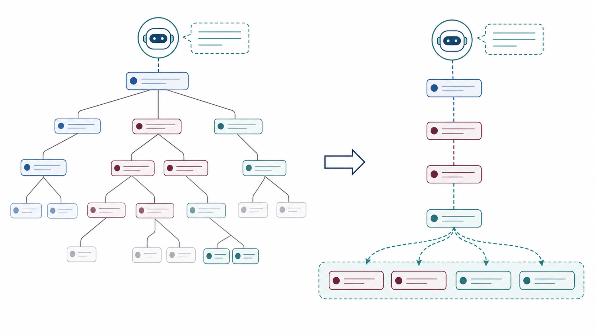

Ph.D. Student · University of Toronto
Yifan Simon Liu
Also publishes as Yifan Liu.
D3M Lab, Department of Mechanical & Industrial Engineering, University of Toronto
I am a first-year Ph.D. student in the Department of Mechanical & Industrial Engineering at the University of Toronto, advised by Dr. Scott Sanner. I completed my undergraduate studies in Computer Science and Economics at the University of Toronto.
My research lies at the intersection of LLM agents and Information Retrieval, with a current focus on building robust, long-lived autonomous agents through structured memory.
LLM Agents
Structured Memory
Conversational AI
Information Retrieval
Natural Language Recommendation
News
- GPR-LLM, BAGEL, and Scene-XR accepted to ACL 2026 Findings. Semantic XPath accepted to ACL 2026 System Demonstrations.
- Demo for Semantic XPath is now available (video).
- Joined D3M Lab as a Ph.D. student.
- MA-DPR accepted at EMNLP 2025.
- Finished undergraduate studies at University of Toronto.
Publications
Contact
Connect with Me
For research discussions, collaboration, or questions about my work, send a short note here or reach me directly by email.